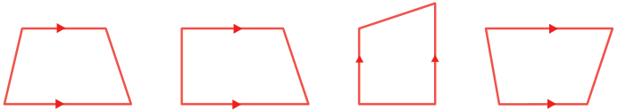
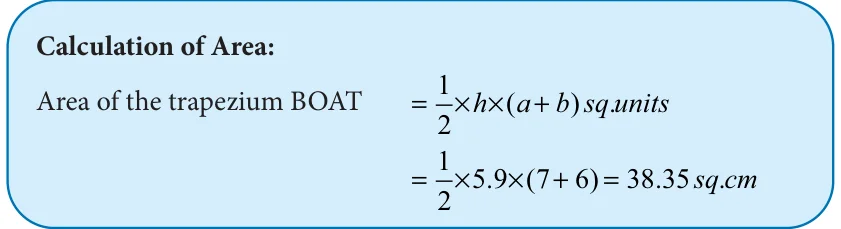
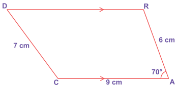
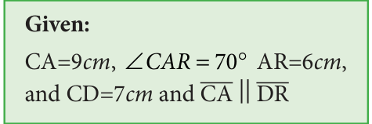
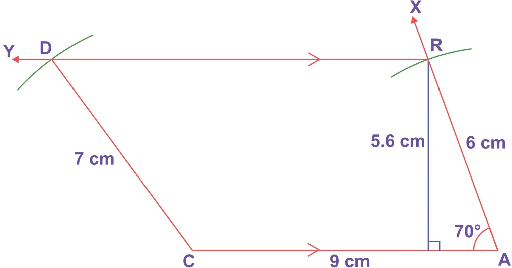
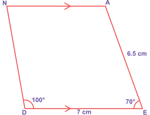
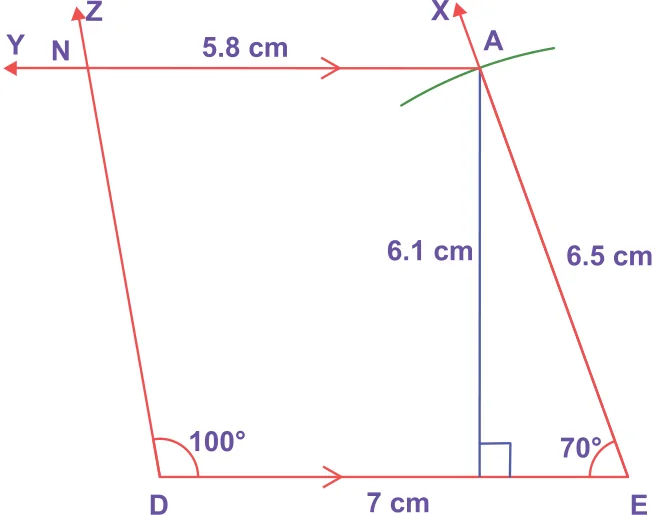
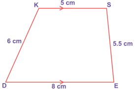
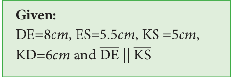

In the first term, we have learnt how to construct the quadrilaterals. To draw a quadrilateral, how many measurements do you need? 5 measurements. Isn't it? Let us see the special quadrilaterals which need less than 5 measurements. Based on the nature of sides and angles of a quadrilateral, it gets special names like trapezium, parallelogram, rhombus, rectangle, square and kite. Now, you will learn how to construct trapeziums. Trapezium is a quadrilateral in which a pair of opposite sides are parallel. To construct a trapezium, draw one of the parallel sides as a base and on that base construct a triangle with the 2 more measurements. Now, through the vertex of that triangle, construct the parallel line opposite to the base so that the triangle lies between the parallel sides. As the fourth vertex lies on this parallel line, mark it with the remaining measure. Hence, we need four independent measures to construct a trapezium. The given shapes are examples of trapeziums.

Note: The arrow marks in the above shapes represent parallel sides.
If the non-parallel sides of a trapezium are equal in length and form equal angles at one of its bases, then it is called an isosceles trapezium.
Try these
- The area of the trapezium is _________.
- The distance between the parallel sides of a trapezium is called as _________.
- If the height and parallel sides of a trapezium are 5cm, 7cm and 5cm respectively, then its area is _________.
- In an isosceles trapezium, the non-parallel sides are _________ in length.
- To construct a trapezium, _________ measurements are enough.
- If the area and sum of the parallel sides are 60 cm and 12 cm , its height is _________.
Let us construct a trapezium with the given measurements
5.11.1 Constructing a trapezium when its three sides and one diagonal are given
Example 5.26
Construct a trapezium BOAT in which BO is parallel to TA, BO=7cm, OA=6cm, BA=10cm and TA=6cm. Also find its area.
Solution:


Steps:
- Draw a line segment \(BO = 7cm\).
- With B and O as centres, draw arcs of radii 10cm and 6cm respectively and let them cut at A.
- Join BA and OA.
- Draw AX parallel to BO
- With A as centre, draw an arc of radius 6cm cutting AX at T.
- Join BT. BOAT is the required trapezium.

5.11.2 Constructing a trapezium when its three sides and one angle are given
Example 5.27
Construct a trapezium CARD in which CA is parallel to DR, CA=9cm, \(\angle = ^{\circ}\) , AR=6cm and CD=7cm. Also find its area.

Solution:


Steps:
- Draw a line segment \(CA= 9cm\).
- Construct an angle \(\angle CAX = 70 ^{\circ}\) at A.
- With A as centre, draw an arc of radius 6cm cutting AX at R.
- Draw RY parallel to CA.
- With C as centre, draw an arc of radius 7cm cutting RY at D.
- Join CD. CARD is the required trapezium.

5.11.3 Constructing a trapezium when its two sides and two angles are given Example 5.28
Construct a trapezium DEAN in which DE is parallel to NA, DE=7cm, \(EA=6.5cm \angle EDN =100 ^{\circ}\) and \(\angle DEA = 70 ^{\circ}\) . Also find its area.
Solution:



Steps:
- Draw a line segment \(DE= 7cm\).
- Construct an angle \(\angle DEX = 70 ^{\circ}\) at E.
- With E as centre draw an arc of radius 6.5cm cutting EX at A.
- Draw AY parallel to DE.
- Construct an angle \(\angle EDZ =100 ^{\circ}\) at D cutting AY at N.
- DEAN is the required trapezium.

5.11.4 Constructing a trapezium when its four sides are given Example 5.29
Construct a trapezium DESK in which DE is parallel to KS, DE=8cm, ES=5.5cm, \(KS =5cm\) and KD=6cm. Find also its area.
Solution:



Steps:
- Draw a line segment \(DE= 8cm\).
- Mark the point A on DE such that DA=5cm.
- With A and E as centres, draw arcs of radii 6cm and 5.5cm respectively. Let them cut at S. Join AS and ES.
- With D and S as centres, draw arcs of radii 6cm and 5cm respectively. Let them cut at K. Join DK and KS.
- DESK is the required trapezium.